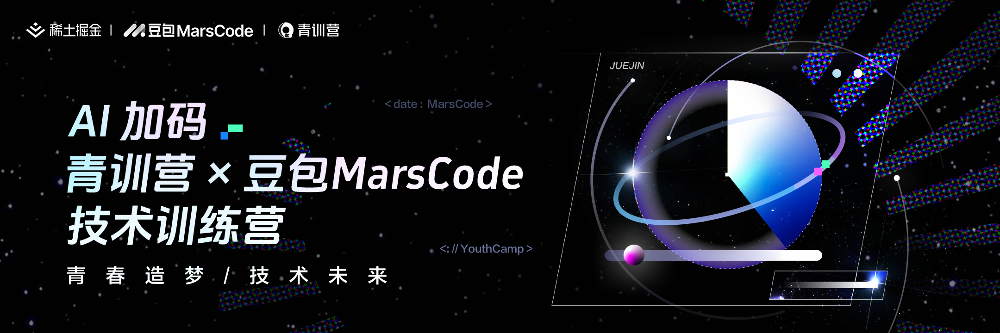
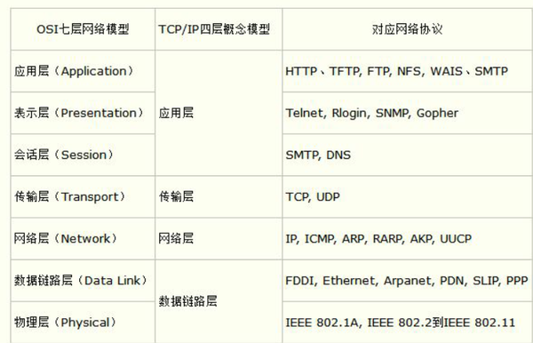

字节训练营


结营要求
-
刷题打卡 > 50
-
每天3题
-
博客要写至少6篇
课程
- 第一门课程 Go 语言上手-基础语言，也就是说现在你们听的这门课程。 主要讲述语言基础语法、入门实战
- 第二门课程 Go 语言上手-工程实践 主要讲述 并发编程、依赖管理、单元测试、项目实战
- 第三门课程 高质量编程与性能调优实战。主要讲述 编码规范、性能优化建议、性能分析工具使用、性能优化流程
- 第四门课程 高性能 Go 语言发行版优化与落地实践。主要讲述 自动内存管理、Go 内存管理及优化、编译器和静态分析、Go 编译器优化


并发编程
- 协程
- 通道
- sync
测试
HTTP协议
超文本传输协议包含
- 请求行
- 请求头
- 请求体


传输的包大部分是4k以下
“Benchmark”
“Benchmark” 是一个评估性能或效率的标准或测试。
在计算机科学和程序开发中，它通常指以下几个方面：
- 性能测试：
- 用于衡量程序、算法或系统在特定条件下的运行效率。常见的基准测试包括处理速度、内存使用、响应时间等。
- 基准工具：
- 一些工具和框架专门用于执行基准测试，帮助开发者比较不同实现或版本的性能表现。例如，Go 语言内置的
testing包支持基准测试，通过Benchmark函数来评估代码执行的速度。
- 一些工具和框架专门用于执行基准测试，帮助开发者比较不同实现或版本的性能表现。例如，Go 语言内置的
- 行业标准：
- 行业内的基准参考，用于对比不同产品或服务的性能。例如，计算机硬件的性能基准，可以帮助用户选择合适的设备。
基准测试示例（Go 语言）
在 Go 语言中，你可以使用以下方式进行基准测试：
package main
import (
"testing"
)
// 被测试的函数
func add(a, b int) int {
return a + b
}
// 基准测试
func BenchmarkAdd(b *testing.B) {
for i := 0; i < b.N; i++ {
add(1, 2)
}
}
刷题笔记
打开抖音互联网发生什么

熟悉TCP/IP , 计算机网络
协议
打开抖音发生了什么过程
- 连入互联网
- 路由 , 交换机 , 网络虚拟化
- 跨网段
- 路由不是对称的: 多路 图
- 路由协议 工作在ip层 但也没这么简单
- 路由不改IP地址 , 路由是改Mac 找到发包口
- ARP协议 广播 , 免费ARP协议
- ARP代理
- IPV6 , ip冲突情况 解决方案
- IP协议 , mac 地址不能代替ip地址 , 向下兼容 协议
- ipv4 不够用 , 解决 , NAT ,
网路打通后 , 视频下载
- 网络传输 , 数据包
- DNS请求
- UDP协议 , 分片 , 丢包 , 传输效率 和质量
- TCP 协议 3次握手 , timewait ,
- HTTP / HTTP 1.1
- HTTPS 加密
- SSL/TLS 握手 , 对称和非对称加密

网络架构给抖音提质
网络提速
- 网络提速 HTTP2.0 , 多路复用 , stream , TCP丢包怎么办 ,
- 对头阻塞 如何解决 , QUIC / HTTP3.0 , UDP 还是TCP , kernel 还是usersapce , 0 RRT , 弱网优势
路径优化
- 数据中心分布
- 同运营商访问 , 通过解析 分析IP
- 静态资源 路径优化 CDN , 静态缓存 , 边缘机房 —> 汇聚机房 —> 核心机房 访问
- 动态API 播放 评论接口 , 路径优化 DSA
网络稳定
- 容灾概念 , 故障发生 - 故障感知- 自动切换 - 服务恢复
- 故障排除: 故障明确 - 故障止损 - 分段排查 (客户端 , 服务端 , 中间链路)
- 故障预防 : 监控报警 - 故障演练 - 故障降级 / 止损
网络接入的问题
域名系统
- host管理 , 面临很多问题
- 域名系统 替换 host
- 域名购买 , 配置迁移
- 开放外部用户访问 , 建设外部网站
自建DNS服务器
- DNS查询过程
- DNS 记录类型
- 权威DNS系统架构
接入HTTPS
- 对称加密 和 非对称加密
- SSL的 通信过程
- 证书链
- 使用 HTTPS
接入全站加速
全站加速 = 静态加速 + 动态加速
- 静态加速 CDN , 缓存
- 动态加速 DCDN , 原理 ,
- 全站加速应用场景 : 用户登录 : 动态加速 , 短视频加载观看 : 静态加速 , 网页浏览 : 静态加速 + 动态加速